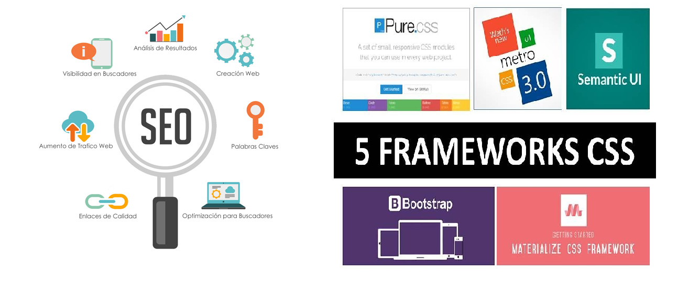

Borrador Frameworks CSS, y Posicionamiento Web
Un frameworks de Css, es una biblioteca de estilos genericos que pueden ser usados para implementar diseños web
como (herramientas, hojas de estilos, imagenes, entre otros), que le permiten al diseñador enfocarse en elementos
unicos de cada diseño.
El posicionamiento web, son acciones orientadas a mejorar el posicionamiento de un sitio web en listados de
resultados de los buscadores de internet, trabajando en aspectos tecnicos y en la optimizacion de estructuras
asimismo aplica en los contenidos con el objetivo de volerlos mas utiles para los usuarios.

Pedros Piñon, M. (2018)